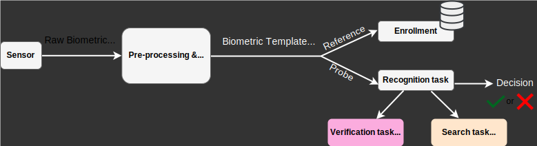
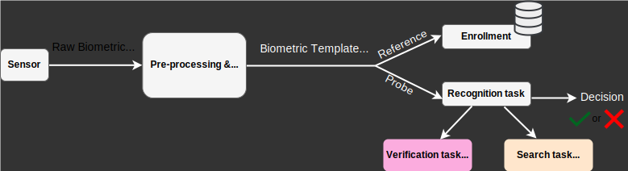

Homomorphic Encryption for Secure Biometrics
BIWG: Research & Prototyping
Progress In Biometric Recognition
Face Recognition
Fingerprint Recognition
Iris Recognition
Gait Recognition
Biometric recognition tasks
 

Biometric System Vulnerabilities
Privacy and Security for biometric recognition


There is no privacy without security
What are the privacy and security risks in Biometric Systems?


From Template inversion attack to Replay and Presentation attack

Template inversion attack on High resolution image

Template inversion attack enables Presentation attack
Presentation attack via digital replay and printed photograph


Attack Success on ArcFace Model
Mitigating Security Vulnerabilities
Biometric template protection schemes

Encrypted Biometrics
- Data encryption is an attractive option
- protects user's data from unauthorized access
- protects service provider's models from unauthorized access
- facilitates free and open sharing of private data
- mitigate legal and ethical issues
- Traditional solutions need data decryption for computation.
- Security only during data transmission.
Homomorphic Encryption: The Holy Grail?
- Cryptographic scheme needs to allow computations directly on the encrypted data.
- Solution: Homomorphic Encryption
- Attractive Property: Conjectured to be post-quantum secure for appropriate choice of encryption parameters.
- Limitations:
- only supports additions and multiplications
- high computational complexity
FHE for Biometric Verification
Biometric Verification with HE
- Vishnu Naresh Boddeti, "Secure Face Matching Using Fully Homomorphic Encryption," BTAS 2018
Key Ideas for Biometric Verification in FHE
- Key Ideas:
- SIMD data encoding for efficiency
- Inner product computation over FHE
- Provable privacy and security
- No loss in verification accuracy
- Key Properties:
- Modality: face (or any fixed-length representation)
- Inner product over normalized vectors.
- Precision-based feature quantization.
- Runs one-to-one comparison in $31.22$ ms
FHE for Biometric Search
Overview
Key Ideas for Scalable Biometric Search in FHE
- Dimensionality Reduction (Machine Learning)
- Scalable Data Encoding (FHE)
Scalable Data Encoding

Efficient Search with Dimensionality Reduction
- Build upon DeepMDS for dimensionality reduction.

Effect of the dimensionality reduction on search runtime
Effect of the dimensionality reduction on search Accuracy (Rank-1)
Two-Stage Search

- Use compressed features (16D) to perform approximate search.
- Narrow down search to $K$, say 10000, nearest neighbors.
- Use original features (192D) to perform exact search over $K$.
- 9$\times$ speed-up (4500 sec to 500 sec) without loss of accuracy.
Protected Biometric Search Solutions in the Literature

Summary of FHE-based Search solutions
- Computational complexity $\mathcal{O}\left( K \cdot \left( \#\mathrm{M}_{\mathrm{HE}} + \#\mathrm{R}_{\mathrm{HE}} + \#\mathrm{A}_{\mathrm{HE}} \right) \right)$

FHE for Biometric Template Fusion
Homomorphically Encrypted Fusion of Biometric Templates
- [SRRB'22] HEFT: Homomorphically Encrypted Fusion of Biometric Templates, IJCB 2022 (Best Student Paper Award)
Fusion Improves Performance, Reduces Dimensionality
- Key Ideas:
- FHE-Aware Feature Concatenation
- FHE-Aware Feature Projection
- FHE-Aware Feature Normalization
- FHE-Aware Projection Learning
- Fusion improves performance:
- Face by 11.07%
- Voice by 9.58%
- Dimensionality Reduction:
- $512D \rightarrow 32D$ (16$\times$ compression)
- [SRRB'22] HEFT: Homomorphically Encrypted Fusion of Biometric Templates, IJCB 2022 (Best Student Paper Award)
Open Problems
Open Problem: Computation integrity check of biometrics under FHE


We trust BUT we do not verify[BHV+21] Fast and accurate likelihood ratio-based biometric verification secure against malicious adversaries
Open Problem: Hardware Accelerators for FHE

Open Problem: Distributed Biometric Authentication
- Aggarwal et al. "FedFace: Collaborative Learning of Face Recognition Model," IJCB 2021
- Meng et al. "Improving Federated Learning Face Recognition via Privacy-Agnostic Clusters," ICLR 2022
- Preliminary Work
- Yonetani, Boddeti, Kitani, Sato "Privacy-Preserving Visual Learning Using Doubly Permuted Homomorphic Encryption," ICCV 2017
- Problems with existing FHE solutions for biometrics:
- Cannot perform distributed authentication.
- Even centralized authentication has practical limitations.
- Either, need shared public key, impractical for some use cases.
- Or, needs key-switching to work with different private keys.
- Solution: Multi-Key FHE
- Critical for practical deployments.
Summary
- Homomorphic encryption offers the potential for end-to-end biometric security with strong post-quantum security guarantees.
- Challenges: High computational complexity.
- Progress: Template protection has been successfully demonstrated for large-scale biometric search.
- Opportunities: Increase efficiency through custom neural network design and hardware accelerators.